Telephony that has to keep working when a server dies, screens that have to be read from across a room, and the security and release work around them. I'm a software engineer based in Tunis, part of a team in Québec, working in French and English, mostly in Node.js and React. I came to engineering through media arts, so I design the interfaces I build, and for much of the past two years I've been the bridge between the developers and the QA team.
Below are six pieces of work from the past year, written up in some detail. Names of the company, its products and its customers are left out on purpose, and every screenshot shows simulated data.
Engineering
Full-stack JavaScript and TypeScript: Node.js services, React interfaces, SQL Server, real-time push, telephony on FreeSWITCH, high availability.
Design
Interfaces that look right and serve the business, benchmarked and measured before they ship.
Quality
Test suites, CI pipelines and signed releases, and the link between development and QA that keeps review rounds short.
Supervisors need to know, within seconds and from across the room, whether callers are waiting and whether anyone is free to answer. The board I built tells them, and it can never look live when it isn't.
Design and full-stack developmentNode.js, React, SQL Server, Socket.IO872 tests
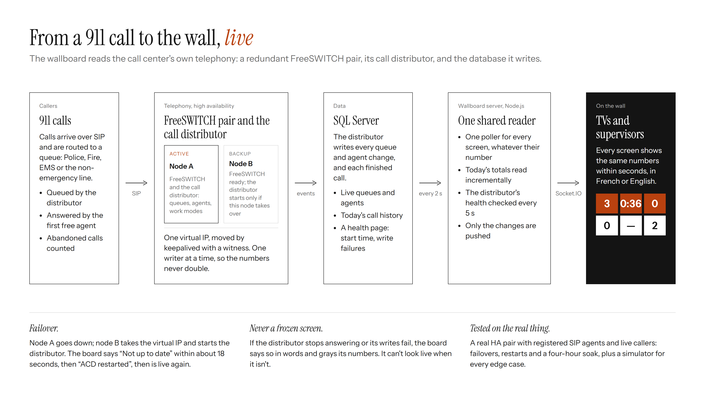
The path from a 911 call to the wall. One reader serves every screen, however many there are.
A 911 center runs on its phone system. Calls arrive over SIP, an automatic call distributor queues them and hands each one to the first free call-taker, and a redundant pair of FreeSWITCH servers keeps all of it running when a machine fails. Supervisors had no live view of any of this at the scale of a room, and nothing warned them when the numbers they did have had stopped updating. On an emergency floor that is the worst failure there is: a frozen screen that still looks fine.
The distributor writes every queue change, every agent state and every finished call to SQL Server. I read those tables with one shared poller, every two seconds, and push only what changed to the browsers. The distributor didn't publish everything the wall needed, so I extended it: how long the oldest caller has been waiting right now, when the process started, and whether its database writes are failing. Those go out on a small health page that the board checks every five seconds.
The design came from a benchmark before any code. Motorola's VESTA heads-up display gave me the structure and the discipline: a fixed table, color only on the number that is wrong, and a plain-language alert line. Geomant's boards gave me the readability of an icon beside a big number. The palette is navy plus one orange family at two strengths, chosen so warning and critical stay apart in grayscale and on a cheap TV.
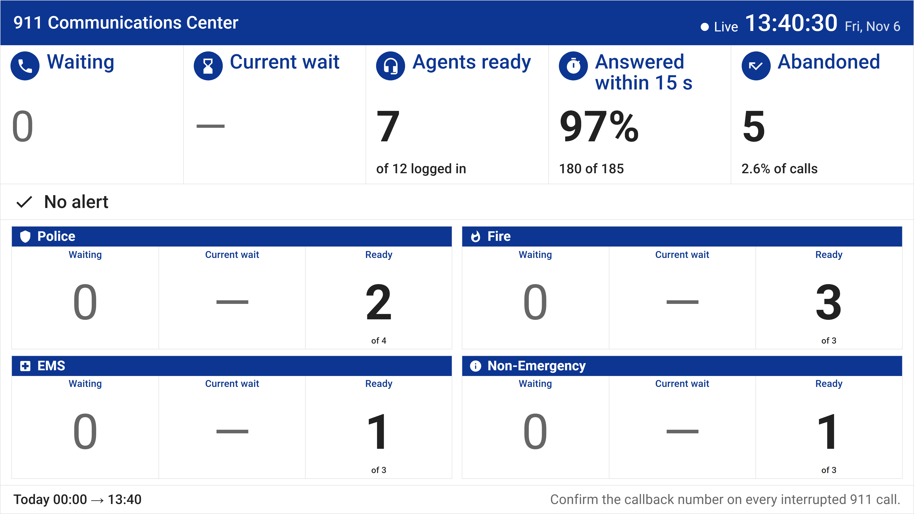
A calm afternoon. Zeros recede into gray; a dash means nothing is waiting.
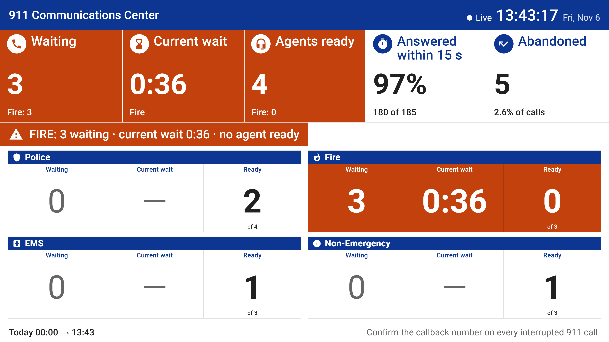
An incident. Only the cells that are wrong turn orange, and each tile in alert names the queue behind it.
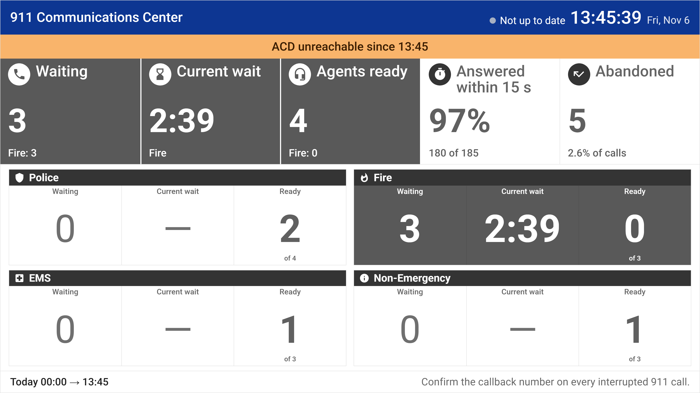
The phone system stops answering. The board says since when and grays everything.
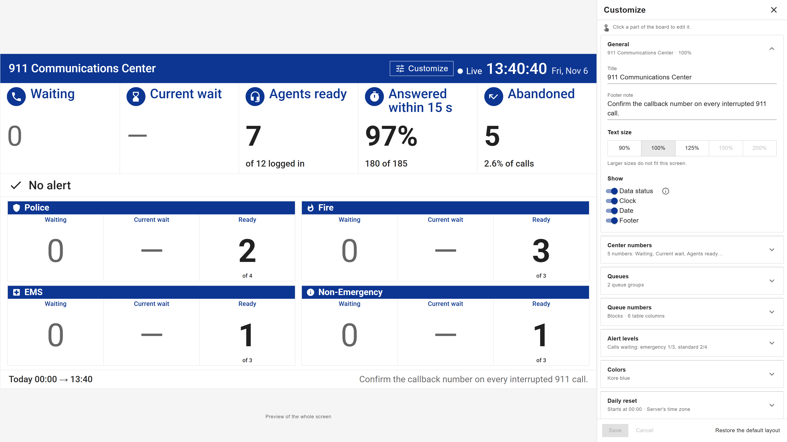
Supervisors change the board themselves, beside a live preview. Nothing reaches the wall until they save.
I tested it against a simulator that writes the tables exactly as the distributor does, and then against the real thing: a two-node FreeSWITCH pair with a witness, registered SIP agents, a console and live callers. Forced failovers, distributor restarts, and a four-hour soak with calls arriving every forty seconds. The soak left one thing I still can't fully explain, a 44-second window where the board and the tables disagreed with no warning shown. It never came back in a timed rerun, and every other difference lasted three to five seconds, but I wrote it down in the pull request rather than round it away.
Before opening the review I did two passes on it the way a design reviewer would, one for use and one for looks, and fixed what I found: a tile that turned orange without saying which queue was behind it, an info icon placed where a click could toggle the wrong switch, a path to the alert levels that took one click too many.
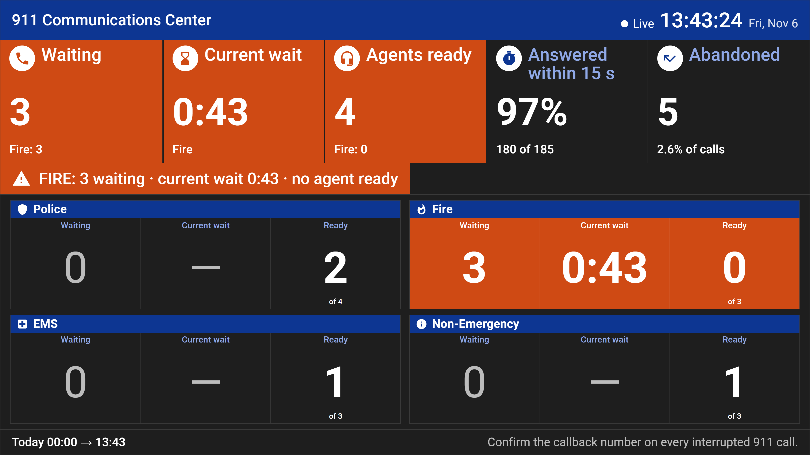
The same incident on the night shift, in dark mode.
02 · Telephony, high availability
Keeping calls alive through a failover
When the active server dies, the backup takes over. A call distributor that started fresh would forget who was waiting and who was on a break. I made the takeover keep both.
FreeSWITCH, keepalived, Puppet, nftablesNode.jsIntegration-tested on a real pair
The distributor runs on a pair of servers that share a virtual IP, moved by keepalived with a witness to break ties. The first problem was simple to state: if both nodes run the distributor and both write the same tables, every number on the wall doubles. So only the node holding the virtual IP may run it. I wired that into keepalived's notify script and into the Puppet configuration, with a bounded stop on demotion so a node leaving the role can't keep writing.
The second problem was the interesting one. FreeSWITCH recovers the calls that were in progress when a node fails, but a distributor starting on the new node knows nothing about them. I made it rebuild its call state from the live channels, queue the recovered callers again (by destination, because FreeSWITCH swaps From and To on a recovered call), offer each one only once even if an earlier process had already taken it, and give every agent back the work mode they had before the takeover. A call-taker on a break stays on a break; one that was ready is ready.
t = 0
The active node fails mid-shift.
seconds
keepalived moves the virtual IP to the backup; the backup starts the distributor, the old one is stopped.
on start
Call state rebuilt from FreeSWITCH's channels; registered agents restored; recovered callers queued again.
on start
Agents get back their previous work mode, for this first recovery only.
≈ 18 s
The wallboard says “Not up to date”, then “ACD restarted” once the new node writes, then it is live.
The shared tables themselves survive a restart now. Rows are reconciled rather than wiped; a stale agent row is removed in that agent's own turn, and only if it is still unknown then. The metrics port the wallboard reads is open to the wallboard servers only, through an nftables table that Puppet reloads with the node's ruleset on every run, not only when the file changes.
All of it was proven on a real lab pair with registered SIP agents and SIPp callers: integration scenarios for the takeover, the restored work modes and the recovered callers, plus container tests for the configuration, including a node leaving the pair and a standalone node that must still start once keepalived is gone.
03 · Infrastructure
An edge proxy that renews its own certificate
A whole suite of applications sits behind one address and one certificate. I took over the small legacy script that did it and made it a service you can forget about.
Node.js 24 on Windows ServerACME, TLS 1.3, WebSocket288 tests, 97.5 % coverage
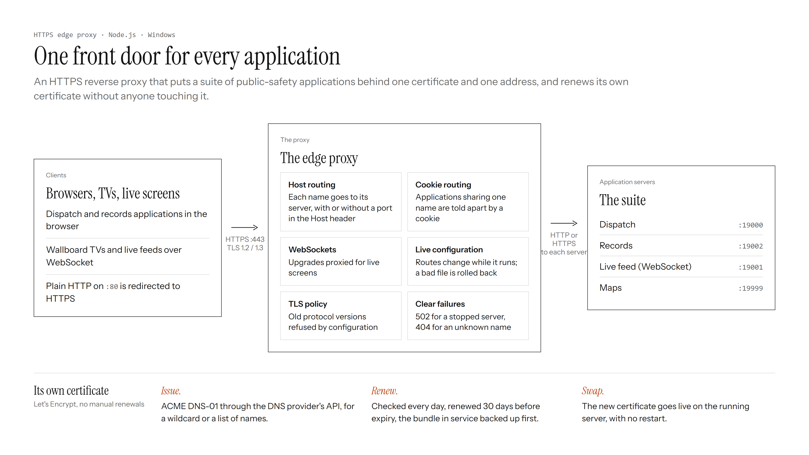
One front door for every application, and a certificate that issues, renews and swaps itself.
When I got it, the proxy was one file. Certificates were installed by hand and renewed by hand, a typo in its configuration could take every application down at once, and there were no tests. An expired certificate on an emergency-services network is an outage, so that was the first thing I fixed.
The proxy now issues and renews its own Let's Encrypt certificate over ACME DNS-01, as a wildcard or for a list of names, through the DNS provider's API behind one small interface (two providers are supported). It checks once a day, renews thirty days before expiry, backs up the bundle in service, and swaps the new certificate onto the running HTTPS server without a restart. If the swap fails, the old certificate stays.
The part I'm fondest of is how the bundle is written to disk. The certificate, its key and a metadata file are staged as .new files, then promoted in a fixed order with the metadata file last, because the loader accepts a bundle only when all three exist. A power cut at any step leaves a complete bundle or none, and “none” just means the proxy issues a new one. What it can never leave is a certificate paired with the wrong key, which would stop the server from starting at all. This took three rewrites and one argument with an automated reviewer that was sure Windows couldn't rename over an existing file. It can.
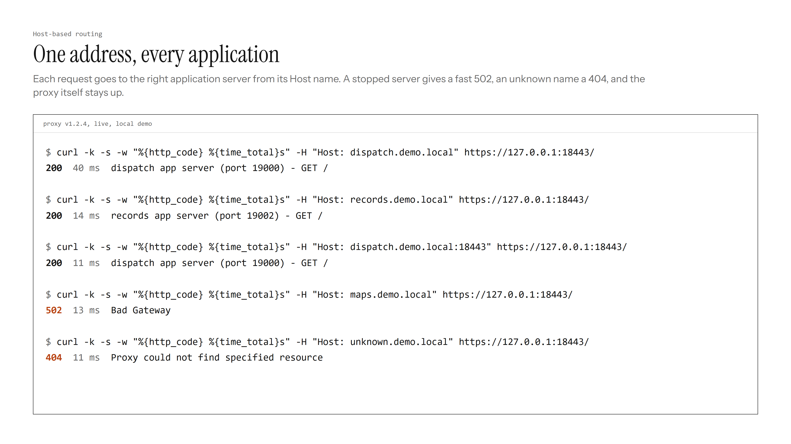
Routing that fails clearly: a fast 502 for a stopped server, a 404 for an unknown name.
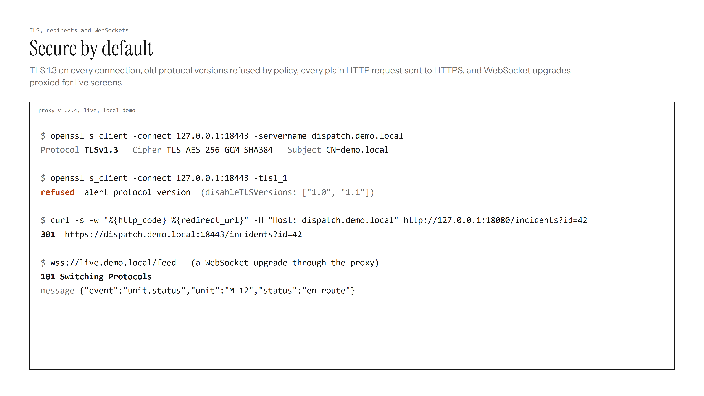
TLS 1.3, old versions refused by policy, HTTP sent to HTTPS, WebSockets upgraded.
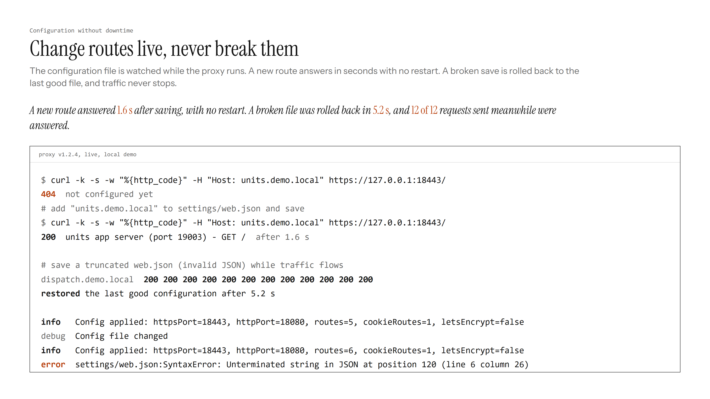
A new route live 1.6 s after saving. A broken save rolled back in 5.2 s while every request was still answered.
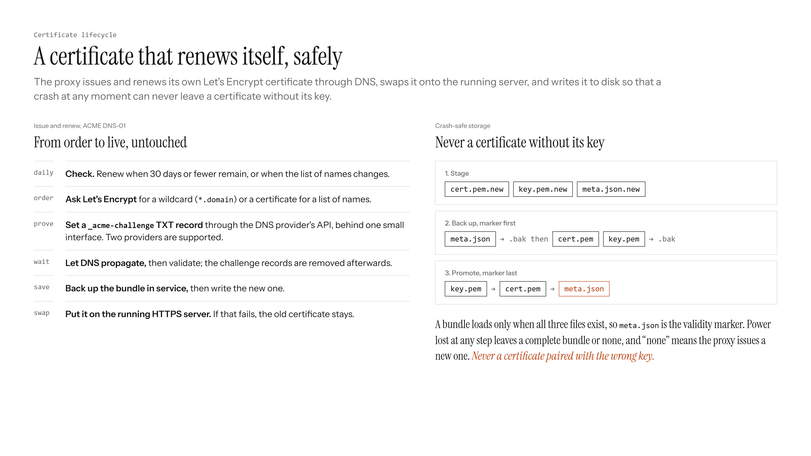
From order to live without anyone touching it, and the write order that makes it safe.
Routes change while the proxy runs, because the configuration file is watched; a bad save is put back to the last good version in about five seconds and traffic never stops. Along the way I upgraded it to Node 24, fixed a race in the DNS validation of wildcard certificates, rebuilt the WebSocket path so an upstream error no longer crashes the process, and wrote the test suite from nothing: 288 tests, run on Windows and Linux on every change, with the release package built only when they pass.
04 · Application security
Thirty security fixes, and the one that mattered
Over six months I fixed about thirty issues across a suite of call-center applications. Most were small. The useful one was noticing why they kept coming back.
OWASP Top 10A regression test for every fix
The suite is a decade old and has grown by plugin. Each plugin drew saved names, notes, tags and log lines into the page in its own way, and some of those ways didn't escape anything. I fixed the stored cross-site scripting one sink at a time at first, then stopped and did what should have been done years earlier: a single shared escaping helper for the whole suite, with the copies in each module routed through it. After that the safe call was the easy call, and the class of bug stopped reappearing in review.
Class
Where it lived
What I did
Stored XSS
Dozens of places drawing saved text into the page
Escape at output everywhere, then one shared helper for the suite
Untrusted HTML
Email previews and rich-text notes that must keep their formatting
An allowlist sanitizer in a sandboxed frame, tested against the real library
SQL injection
A sign-in claim, saved layouts, audit logging, a user filter language
Parameterized queries throughout; a quote-aware parser for the filters
SSRF
Admin screens that make the server call another address
Allowlist and port checks before any outbound request, IPv6 and link-local included
Path traversal
File download, image upload and delete, mail attachments
Names confined to their directory; null bytes rejected; types and sizes limited
Leaks
Server and database errors returned to the browser
Generic errors to the client, the details to the log
// Before: each screen escaped on its own, or forgot to.
row.innerHTML = `<td>${name}</td>`; // unsafe// After: one helper, used everywhere output is drawn.
row.innerHTML = `<td>${escapeHtml(name)}</td>`;
// Or, where there is no reason to build HTML at all:
cell.textContent = name;
I worked the same way on each one: a failing test first, kept afterwards as the regression test; then a search for the same pattern elsewhere in the suite, because a bug that exists once usually exists three times; then a small, reviewable change with its reasoning in the pull request. Validation at the edge and escaping at output, never one without the other.
05 · Release engineering
From a commit to a signed installer
A suite of Windows services ships to emergency centers as installers. I worked on most of the distance between a commit and a trustworthy install.
The tests came first, because nothing else is worth much without them. The main codebase's suites used a mix of older mocking libraries; I moved them to Jest, organized by project, with xUnit reports and trend graphs in Jenkins so a failure is visible without opening a log. The plugin suites could only run serially, because parallel workers crashed; I found why, fixed it, and dropped the serial flag, which cut the runtime substantially. Later I turned the console noise down so that what remains in a CI log is the failure.
Then the artifacts. Every installer the suite produces is now code-signed in the pipeline, interim setups and archives included, replacing a step that injected a signed executable into a built package and broke when anyone looked at it. Versions come from GitVersion. A database check flags a schema change shipped without a version bump. Two of the Node services got Windows containers, built and pushed to a registry by CI.
The installers themselves had a quiet security problem: the database and service passwords they set up were passed to child processes on the command line, where any user on the machine could read them in a process list. I moved them into the environment, isolated per child process, and wrote a test that asserts no password ever appears on a command line again. The same round of work made repairs and updates respect what is already installed: existing ports are read back, a free port is found or the install stops, and a guess is never written to disk.
Commit, with a version from GitVersion.
Test on Windows and Linux, in parallel, with reports in CI.
Check the schema version.
Build the services, the setups and the container images.
Sign every installer and archive.
Install: firewall rules, service descriptions, safe ports, secrets off the command line.
06 · Practice
Working with coding agents, accountably
I use coding agents every day and treat their output the way I'd treat a sharp junior colleague's: reviewed, tested, and credited.
Two things I set up for the teams around me. The first is an attribution standard: every commit made with an agent's help carries a co-author trailer naming the tool, so the share of AI-assisted work can be counted instead of guessed from commit messages. The second is a report that classifies merged pull requests as verified AI, likely AI or human-only, by project and by author, every two weeks, so the question “is this helping?” gets an answer with numbers in it.
In the repositories themselves I wrote the rules the agents follow: check for an existing ticket before filing one, label what an agent created, put the ticket in every pull-request title. And a few rules I keep for myself. An agent's change is finished when its tests and a live check pass, not when it compiles. A review comment is checked against the code before it's acted on, because reviewers, human and otherwise, are wrong often enough. Anything that leaves the machine, a push, a ticket, a message, waits for an explicit yes from a person.
The wallboard above is the best example of what that looks like in practice: most of the code was written with an agent, all of it was tested on a real phone system, and the parts I'm proudest of are the decisions, not the typing.
About
I'm based in Tunis and work with a team in Québec, in both languages, which matters more than it sounds when the users are 911 call-takers and the labels on a wall have to read the same way in French and English. My background is full-stack, with the past two years spent close to telephony, security and the release pipeline of a public-safety software suite.
Before engineering I studied media arts, which is why the interfaces here were designed rather than assembled. And for much of that time I sat between development and QA: writing the reproduction steps, agreeing on what finished means, and getting each fix to the testers in a form they could trust.
I like problems where being wrong has a cost, and I like to design what I build. The habit that defines how I work is checking things on the real system before claiming them: a real PBX pair rather than a mock, a TV across the room rather than a laptop, a four-hour soak rather than a demo that works once.
Now: handing over the wallboard for review, and writing more of these.
Colophon
Set in Instrument Serif and Instrument Sans. Hand-written HTML and CSS, no framework, no tracking. The screenshots were taken from the real systems running against simulated data; the diagrams were drawn in HTML and rendered to images. Last updated 6 November 2026.